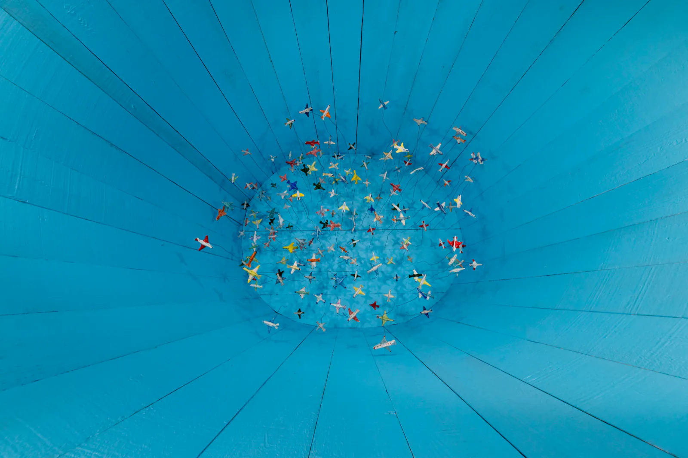
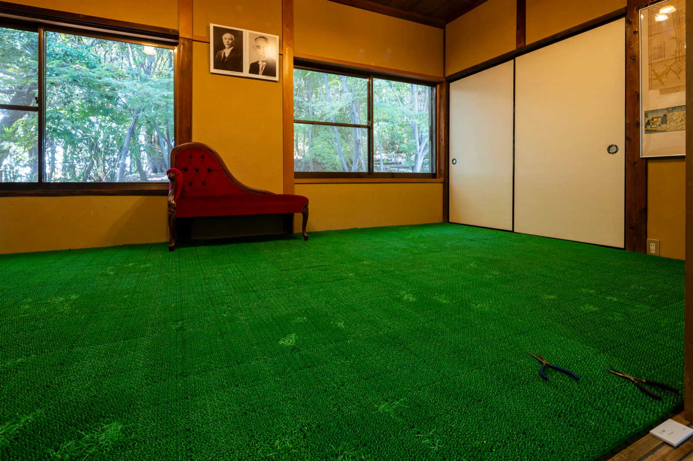
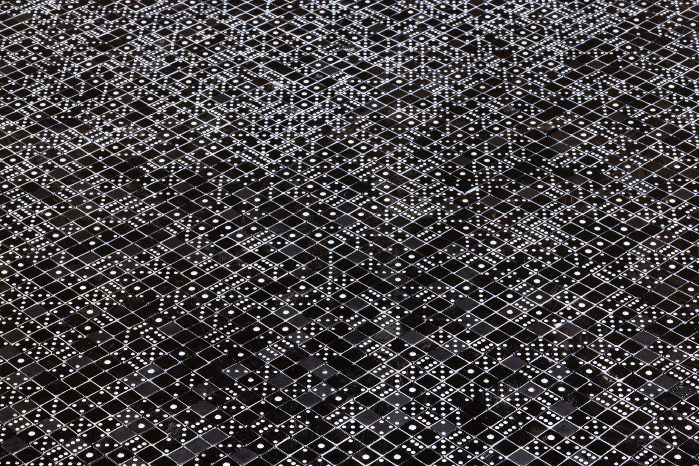
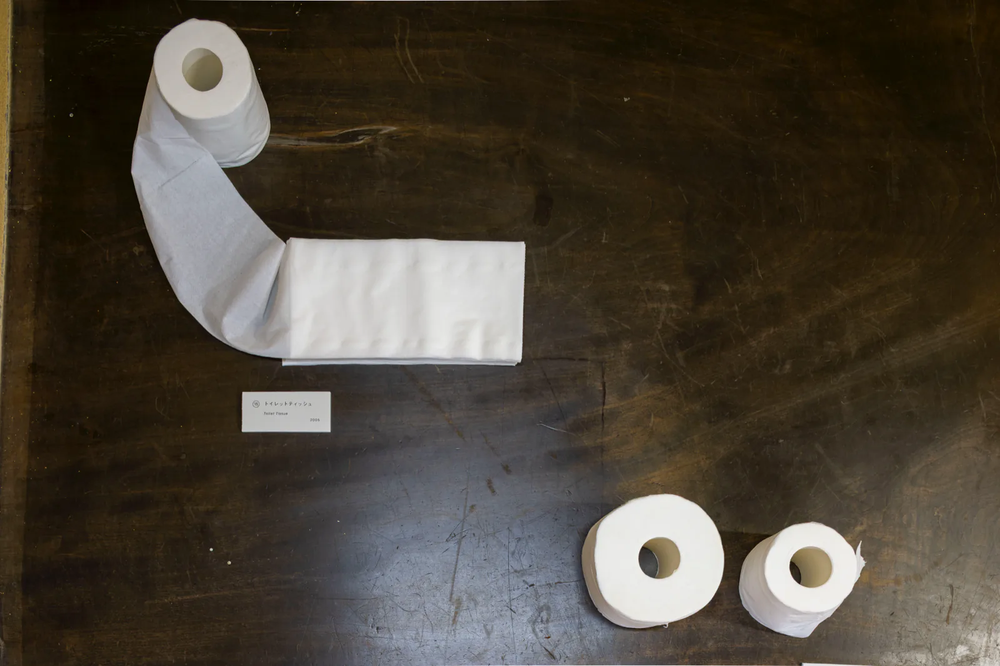
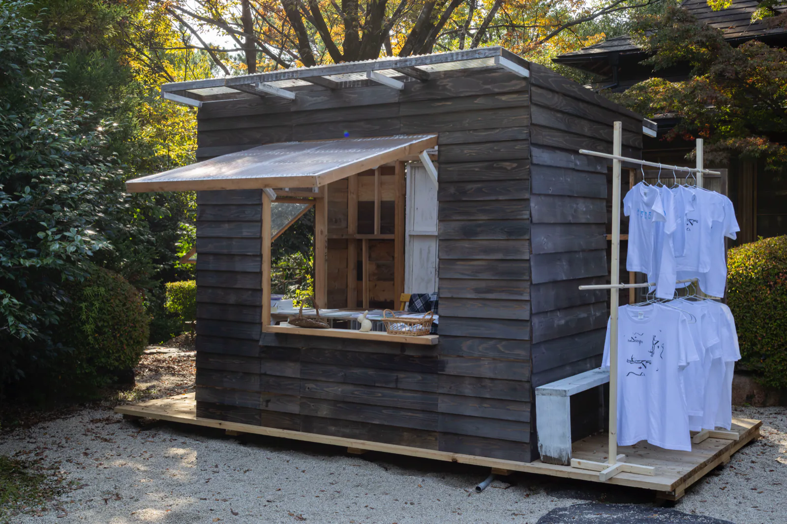

Works by Eiji Watanabe (artist)渡辺英司の作品
Twenty-four works in the tatami rooms and on the windowsills of the Rest Building. Numbers and years follow the list of works in the catalogue. Of the artist’s own comments, only the first sentence or two are quoted here; longer ones are summarized. The full texts are in the catalogue’s list of works (pp.73–78).
- “COME”COME2012
I saw letters of the alphabet in the cross sections of aluminum building materials, and used them to spell the word “COME.”
- “Star Dust”星くず Star Dust1998
When cutting iron with a high-speed cutting machine, lots of sparks were flying around that I caught directly in a black vinyl garbage bag. The dust of the sparks made countless holes in the bag, which made it look like a galaxy.
- “Dream of the Sky / note (drawing)”空の夢 メモ (ドローイング)2000
About 20 years ago, I had a dream in which I was looking from above into something like a big miso barrel. The scenery was dazzling like the sun, with countless airplanes flying around, and I was in a position higher than the planes.
- “Dream of the Sky / Above the Sky”空の夢 / 空の上2024
Twenty years on from that dream of a miso barrel, I found my notes about it and reconstructed the scenery I still remembered clearly. I was above the sky.

④ “Dream of the Sky / Above the Sky”Photo: Kenji Aoki - “Paper Planes”紙飛行機2016
I once spotted a newspaper photograph of jet planes flying in front of the “Hollywood” sign. It looked so cool that I thought it might be turned into art just by giving it a title. After several hours of contemplation, I had a flash of inspiration: “Paper Planes!”
- “Sea of Eden”エデンの海2022
A Dutch friend, Paul Goede, sent me encyclopedias of fish and frogs. I had tried fish about 28 years ago and it hadn’t gone well, but with these new encyclopedias I decided to give it another try. I managed to betray my own preferences.

⑥ “Sea of Eden” · Tatami room, Rest BuildingPhoto: Kenji Aoki (EXIF to be confirmed) - “Sailing”出航1997
In a Gakken encyclopedia, the “Industry” volume, thrown away with the oversized garbage, I found a series of photographs documenting the making of a tanker up to the moment it set sail. So I let a ship “sail” from the encyclopedia too. Its cargo: words!
- “Room of Questions”問いの部屋2004
A book of riddles I had found for my English studies read to me like philosophical problems. I made a board of questions with no answers. Whoever reads it goes on thinking about the answers, and turns into a philosopher.
- “Paper Clay / Torso”紙粘土 / トルソー2006
When I was a child, my grandfather ran a liquor shop that sold sake lees in plastic bags. Pushing the lees casually with my fingers, I felt them turn into clay inside the bag.
- “Reproduction of Reproduction / miniature”再生の再生 / ミニチュア1998
I found skeletal models of dinosaurs. They looked poor as bare bones, so I fleshed them out with paper clay and beeswax.
- “Ever Green”常緑 / Ever Green2004
To make the blades of an artificial lawn grow, I gripped them with radio pliers and slowly pulled. The more artificial the operation, the more natural the result, like weeds coming up.

⑪ “Ever Green”Photo: Kenji Aoki (EXIF to be confirmed) - “Dice Branding Irons”骰子焼印1994
I made branding irons of the six faces of a die, an attempt to make “branding” equal to “naming.”
- “Names of Stars”星の名前1997
White dice with only the hollows of the dots, laid out in a rectangle, their top faces painted black. The numbers that happen to show become symbols, like the names of stars.

⑬ “Names of Stars”Photo: Kenji Aoki (EXIF to be confirmed) - “Talking Mirror”話す鏡2007
My first artist residency, in 2002, took place in Yamaguchi City and in Edinburgh. Waking from a vivid dream summoned by those memories, I found myself in front of an entirely mirrored closet. That was the daydream that produced “Talking Mirror.”
- “Toilet Tissue”トイレットティッシュ2005
Two differently shaped connected items made out of one roll of toilet paper. Made by the artist

Left, ⑮ “Toilet Tissue” (made by the artist); right, ⑯ “Ebbinghaus Illusion” (presented by the scientist)Photo: Kenji Aoki (EXIF to be confirmed) - “Ebbinghaus Illusion”エビングハウス錯視 (トイレットペーパー版)2025
In this toilet paper version, the cores of two identical rolls, one new and the other half used, appear to differ in size. Presented by the scientist
- “Miracle Ball”魔球1998
When receiving a high-speed smash in table tennis, the ball penetrated my racket.
- “Silhouette Monster”シルエットモンスター2017
Exercising with dumbbells in front of a light at night, I saw my own shadow projected huge onto the house diagonally across the street, as if a monster were demolishing it.
- “Handmade”ハンドメイド2020
A curator at the museum in Tottori was dusting off artworks. When she had finished, the shape of her hand was firmly imprinted on the cloth. I picked it up from the garbage and took it home.
- “Memories”メモリーズ2004
I painted “MEMORIES” on the spines of sponges that also look like books. Bend one as if reading it, and lots of cuts appear in which you can read memories of events.
- “Jenga”ジェンガ2004
Using the blocks inside, I recreated the scene of collapse printed on the Jenga box. The moment of collapse, frozen.
- “S=1/43 (model car)”S=1/43 (ミニカー)2002
I turned a model car, made to a precise scale of 1/43, into an event: an accident. The event of the accident itself occurred at S=1/43 as well.
- “The story of the man in the picture / three-dimensional objects”絵の中の男の話 / 立体1999
Instead of illustrations for the short story “The story of the man in the picture,” I made three-dimensional ones from earthenware.
- “mo n do ri – an transformed”変身もんどり庵2025
A hut I had built in my studio resembled the “mo n do ri – an” that Akio Suzuki once made, so I rebuilt it here. It served as a café, a shop, and the stage for the sound performance and dance by Akio Suzuki and Hiromi Miyakita.

㉔ “mo n do ri – an transformed” and Tiny shop the W EijiPhoto: Kenji Aoki